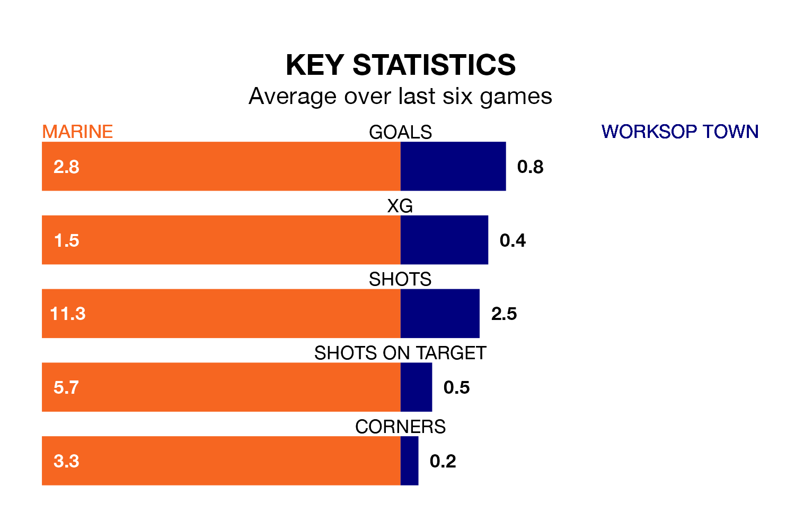

Saturday's match between Marine and Worksop Town promises to be one for the neutrals, as two of Northern Premier League's most free-scoring sides go head-to-head.
Ahead of the game at the Marine Travel Arena, Marine and Worksop sit second and third in the goal-scoring charts, with 59 and 55 goals respectively.
Marine are third in the table after 27 games, of which they have won 14 and drawn six, earning 48 points.
Worksop are two places behind the hosts in fifth, with 14 wins and five draws putting them on 47 points.
Marine are in mixed form in Northern Premier League, with three wins and a draw from their last six games.
And also with three wins and a draw over that period, Town's form is identical – they have both taken 10 points from 18.
Marine's last match was on January 20, a 7-1 win against Bamber Bridge.
Worksop beat Stafford Rangers 2-0 last time out, also on January 20.
Updated: 09:18 (UTC), 23/01/24